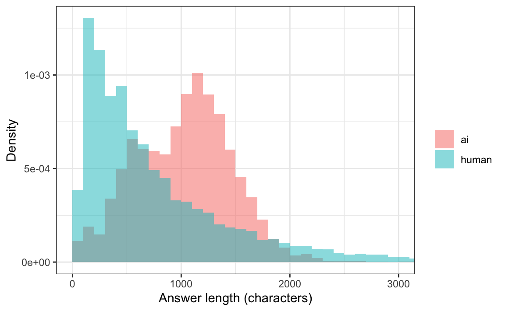
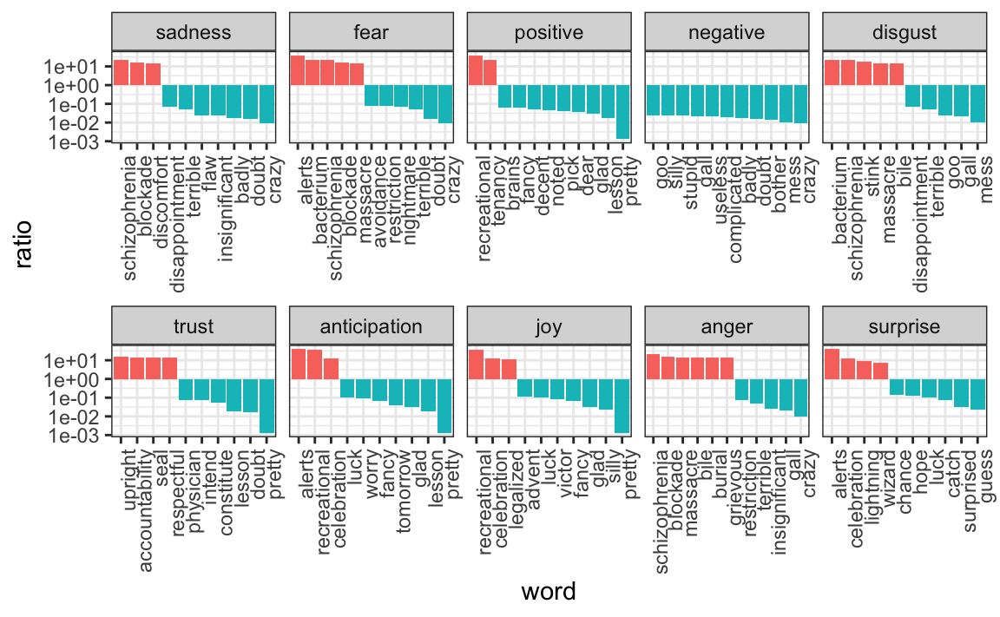

library(tidyverse)
library(scales)
library(tidytext)
library(textdata)
library(jsonlite)17 Text analysis
With the exception of labels used to represent categorical data, we have focused on numerical data. But in many applications, data starts as text. Well-known examples are spam filtering, cyber-crime prevention, counter-terrorism, and sentiment analysis. In all these cases, the raw data is composed of free-form text. Our task is to extract insights from these data. In this section, we learn how to generate useful numerical summaries from text data to which we can apply some of the powerful data visualization and analysis techniques we have learned.
17.1 Case study: human versus AI answers
Since late 2022, large language models (LLMs) such as ChatGPT can produce fluent answers to almost any question. This raises a practical question for anyone working with user-generated text – product reviews, survey responses, forum posts, homework: can we tell, from the text alone, whether a human or an LLM wrote it? This matters for detecting fake reviews, for flagging AI-assisted exam answers, and, more generally, for understanding how machine-generated text differs from the human kind.
To study this we use the Human ChatGPT Comparison Corpus (HC3)1, introduced in a 2023 paper by Guo and co-authors2. For each of thousands of questions the corpus provides one or more answers written by people (often domain experts, or highly rated forum answers) and one or more answers generated by ChatGPT for the same question. Because the question is held fixed, any systematic difference we find between the two sets of answers is a difference in authorship, not in topic. This is the same idea behind a classic text-analysis case study3 that asked whether two different people were posting from a single social-media account by comparing the language coming from each device.
17.1.1 Getting the data
HC3 is not included in the behdslabs package. It is hosted by its authors on the Hugging Face Hub, it is fairly large, and part of the lesson here is learning to obtain and document a dataset you did not get from a package. The code below downloads four of the corpus’s topic domains – computer-science Wikipedia entries, open-domain quiz questions, finance, and medicine – and skips the much larger reddit_eli5 domain, whose text is subject to Reddit’s terms of use. You only need to run the download once; the if (!file.exists(...)) guard means re-running the chapter will reuse the local copies.
domains <- c("wiki_csai", "open_qa", "finance", "medicine")
base_url <- "https://huggingface.co/datasets/Hello-SimpleAI/HC3/resolve/main/"
hc3_raw <- map_df(domains, function(domain) {
file <- paste0(domain, ".jsonl")
if (!file.exists(file)) download.file(paste0(base_url, file), file, quiet = TRUE)
stream_in(file(file), verbose = FALSE) |> mutate(source = domain)
})Each row is one question, and the human and ChatGPT answers are stored in list columns because a question can have more than one of each:
glimpse(hc3_raw)
#> Rows: 7,210
#> Columns: 4
#> $ question <chr> "Please explain what is \"Animal cognition\"",~
#> $ human_answers <list> "Animal cognition encompasses the mental capa~
#> $ chatgpt_answers <list> "Animal cognition refers to the mental capaci~
#> $ source <chr> "wiki_csai", "wiki_csai", "wiki_csai", "wiki_c~We want a table with one answer per row, labeled by who wrote it. We use pivot_longer to stack the two answer columns and then unnest_longer to expand the lists:
answers <- hc3_raw |>
transmute(question, source,
human = human_answers, ai = chatgpt_answers) |>
pivot_longer(c(human, ai), names_to = "author", values_to = "text") |>
unnest_longer(text) |>
filter(!is.na(text) & str_squish(text) != "") |>
mutate(answer_id = row_number())This leaves us with a good-sized corpus:
answers |> count(author)
#> # A tibble: 2 x 2
#> author n
#> <chr> <int>
#> 1 ai 10225
#> 2 human 721017.1.2 A first look
Before touching individual words, one blunt summary already separates the two groups: length. Here is the distribution of answer lengths, in characters, for each author:
answers |>
mutate(n_char = str_length(text)) |>
ggplot(aes(n_char, after_stat(density), fill = author)) +
geom_histogram(binwidth = 100, boundary = 0, alpha = 0.5, position = "identity") +
coord_cartesian(xlim = c(0, 3000)) +
labs(x = "Answer length (characters)", y = "Density", fill = "")
answers |>
mutate(n_char = str_length(text)) |>
group_by(author) |>
summarize(median = median(n_char), sd = sd(n_char))
#> # A tibble: 2 x 3
#> author median sd
#> <chr> <dbl> <dbl>
#> 1 ai 1062 440.
#> 2 human 547 823.The ChatGPT answers are both longer and much more uniform in length: they cluster around a thousand characters, while the human answers range from one-line replies to long essays. A model that always writes a tidy three-paragraph answer looks different from a crowd of people, some terse and some verbose. This is our first hint that authorship leaves a measurable trace; next we look for it in the words themselves.
17.2 Text as data
The tidytext package helps us convert free-form text into a tidy table. Having the data in this format greatly facilitates data visualization and the use of statistical techniques.
The main function needed to achieve this is unnest_tokens. A token refers to a unit that we are considering to be a data point. The most common token will be words, but they can also be single characters, n-grams, sentences, lines, or a pattern defined by a regex. The function takes a vector of strings and extracts the tokens so that each one gets a row in the new table. Here is a simple example:
poem <- c("Roses are red,", "Violets are blue,",
"Sugar is sweet,", "And so are you.")
example <- tibble(line = c(1, 2, 3, 4),
text = poem)
example
#> # A tibble: 4 x 2
#> line text
#> <dbl> <chr>
#> 1 1 Roses are red,
#> 2 2 Violets are blue,
#> 3 3 Sugar is sweet,
#> 4 4 And so are you.
example |> unnest_tokens(word, text)
#> # A tibble: 13 x 2
#> line word
#> <dbl> <chr>
#> 1 1 roses
#> 2 1 are
#> 3 1 red
#> 4 2 violets
#> 5 2 are
#> # i 8 more rowsNow let’s look at one of the answers. We pick a ChatGPT answer that contains a line-break marker directly against a word, because it will let us illustrate a cleaning problem:
i <- which(answers$author == "ai" & str_detect(answers$text, "\\.\\\\n[A-Z]"))[1]
answers$text[i] |> str_wrap(width = 65) |> cat()
#> On a traditional stoplight, the colors are typically arranged
#> in the following order:\n\nRed: This indicates that vehicles
#> must stop and not proceed through the intersection.\nYellow or
#> amber: This indicates that the signal is about to turn red and
#> that vehicles should prepare to stop.\nGreen: This indicates that
#> vehicles may proceed through the intersection if it is safe to
#> do so.\nIn some countries, a fourth light, known as a "flashing
#> red" or "red arrow," may be added to indicate that vehicles
#> in a specific lane must stop and may not turn in the direction
#> indicated by the arrow.\n\nIt is important to note that the order
#> and meanings of the colors on a stoplight may vary in different
#> parts of the world. It is always important to familiarize
#> yourself with the local traffic signals and laws before driving
#> in a new area.answers[i, ] |>
unnest_tokens(word, text) |>
pull(word)
#> [1] "on" "a" "traditional" "stoplight"
#> [5] "the" "colors" "are" "typically"
#> [9] "arranged" "in" "the" "following"
#> [13] "order" "n" "nred" "this"
#> [17] "indicates" "that" "vehicles" "must"
#> [21] "stop" "and" "not" "proceed"
#> [25] "through" "the" "intersection" "nyellow"
#> [29] "or" "amber" "this" "indicates"
#> [33] "that" "the" "signal" "is"
#> [37] "about" "to" "turn" "red"
#> [41] "and" "that" "vehicles" "should"
#> [45] "prepare" "to" "stop" "ngreen"
#> [49] "this" "indicates" "that" "vehicles"
#> [53] "may" "proceed" "through" "the"
#> [57] "intersection" "if" "it" "is"
#> [61] "safe" "to" "do" "so"
#> [65] "nin" "some" "countries" "a"
#> [69] "fourth" "light" "known" "as"
#> [73] "a" "flashing" "red" "or"
#> [77] "red" "arrow" "may" "be"
#> [81] "added" "to" "indicate" "that"
#> [85] "vehicles" "in" "a" "specific"
#> [89] "lane" "must" "stop" "and"
#> [93] "may" "not" "turn" "in"
#> [97] "the" "direction" "indicated" "by"
#> [101] "the" "arrow" "n" "nit"
#> [105] "is" "important" "to" "note"
#> [109] "that" "the" "order" "and"
#> [113] "meanings" "of" "the" "colors"
#> [117] "on" "a" "stoplight" "may"
#> [121] "vary" "in" "different" "parts"
#> [125] "of" "the" "world" "it"
#> [129] "is" "always" "important" "to"
#> [133] "familiarize" "yourself" "with" "the"
#> [137] "local" "traffic" "signals" "and"
#> [141] "laws" "before" "driving" "in"
#> [145] "a" "new" "area"Note the odd tokens beginning with n, such as nthe or nin. The models format their answers into paragraphs and lists using the line-break marker \n; when unnest_tokens strips the backslash it leaves the n stuck to the next word. (A related issue: the answers also contain the HTML entities &, > and <.) This is the analogue of stray links and picture URLs in social-media text, and we clean it the same way – with a regular expression that removes these markers before tokenizing:
clean_markup <- "\\\\[nrt]|&|>|<"
answers[i, ] |>
mutate(text = str_remove_all(text, clean_markup)) |>
unnest_tokens(word, text) |>
pull(word)
#> [1] "on" "a" "traditional" "stoplight"
#> [5] "the" "colors" "are" "typically"
#> [9] "arranged" "in" "the" "following"
#> [13] "order" "red" "this" "indicates"
#> [17] "that" "vehicles" "must" "stop"
#> [21] "and" "not" "proceed" "through"
#> [25] "the" "intersection" "yellow" "or"
#> [29] "amber" "this" "indicates" "that"
#> [33] "the" "signal" "is" "about"
#> [37] "to" "turn" "red" "and"
#> [41] "that" "vehicles" "should" "prepare"
#> [45] "to" "stop" "green" "this"
#> [49] "indicates" "that" "vehicles" "may"
#> [53] "proceed" "through" "the" "intersection"
#> [57] "if" "it" "is" "safe"
#> [61] "to" "do" "so" "in"
#> [65] "some" "countries" "a" "fourth"
#> [69] "light" "known" "as" "a"
#> [73] "flashing" "red" "or" "red"
#> [77] "arrow" "may" "be" "added"
#> [81] "to" "indicate" "that" "vehicles"
#> [85] "in" "a" "specific" "lane"
#> [89] "must" "stop" "and" "may"
#> [93] "not" "turn" "in" "the"
#> [97] "direction" "indicated" "by" "the"
#> [101] "arrow" "it" "is" "important"
#> [105] "to" "note" "that" "the"
#> [109] "order" "and" "meanings" "of"
#> [113] "the" "colors" "on" "a"
#> [117] "stoplight" "may" "vary" "in"
#> [121] "different" "parts" "of" "the"
#> [125] "world" "it" "is" "always"
#> [129] "important" "to" "familiarize" "yourself"
#> [133] "with" "the" "local" "traffic"
#> [137] "signals" "and" "laws" "before"
#> [141] "driving" "in" "a" "new"
#> [145] "area"We are now ready to extract the words from all the answers.
answer_words <- answers |>
mutate(text = str_remove_all(text, clean_markup)) |>
unnest_tokens(word, text)And we can now answer questions such as “what are the most commonly used words?”:
answer_words |>
count(word) |>
arrange(desc(n))
#> # A tibble: 42,181 x 2
#> word n
#> <chr> <int>
#> 1 the 153940
#> 2 to 92026
#> 3 a 86381
#> 4 and 80764
#> 5 of 75986
#> # i 42,176 more rowsIt is not surprising that these are the top words, which are not informative. The tidytext package has a database of these commonly used words, referred to as stop words:
head(stop_words)
#> # A tibble: 6 x 2
#> word lexicon
#> <chr> <chr>
#> 1 a SMART
#> 2 a's SMART
#> 3 able SMART
#> 4 about SMART
#> 5 above SMART
#> # i 1 more rowWe remove the stop words, and we also drop tokens that are just numbers (using the regex ^\d+$) and strip a leading ' left over from quotations:
answer_words <- answer_words |>
filter(!word %in% stop_words$word & !str_detect(word, "^\\d+$")) |>
mutate(word = str_replace(word, "^'", ""))This leaves a much more informative set of top words:
answer_words |>
count(word) |>
slice_max(n, n = 10) |>
arrange(desc(n))
#> # A tibble: 10 x 2
#> word n
#> <chr> <int>
#> 1 tax 6913
#> 2 financial 6478
#> 3 stock 6281
#> 4 price 6053
#> 5 credit 5483
#> # i 5 more rows17.4 Sentiment analysis
In sentiment analysis we assign a word to one or more “sentiments”. This approach will miss context-dependent meaning, such as sarcasm, but applied to large numbers of words the summaries can be informative.
The tidytext package gives access to several sentiment lexicons through the textdata package. The bing lexicon divides words into positive and negative:
get_sentiments("bing")The AFINN lexicon assigns a score between -5 (most negative) and 5 (most positive). It has to be downloaded the first time you call the function:
get_sentiments("afinn")The nrc lexicon provides several finer-grained sentiments and also has to be downloaded the first time:
get_sentiments("nrc") |> count(sentiment)
#> # A tibble: 10 x 2
#> sentiment n
#> <chr> <int>
#> 1 anger 1245
#> 2 anticipation 837
#> 3 disgust 1056
#> 4 fear 1474
#> 5 joy 687
#> # i 5 more rowsFor our analysis we use the nrc lexicon:
nrc <- get_sentiments("nrc") |> select(word, sentiment)We combine words and sentiments with a join. Because many words carry more than one sentiment, we pass relationship = "many-to-many":
answer_words |>
inner_join(nrc, by = "word", relationship = "many-to-many") |>
select(author, word, sentiment) |>
sample_n(5)
#> # A tibble: 5 x 3
#> author word sentiment
#> <chr> <chr> <chr>
#> 1 ai destroyed sadness
#> 2 human intelligence trust
#> 3 human provide trust
#> 4 ai money joy
#> 5 ai ease positiveNow we compare the two authors by counting how often each sentiment appears in each group. For each sentiment we compute its proportion among all sentiment-tagged words for that author, and take the ratio (AI proportion divided by human proportion):
sentiment_counts <- answer_words |>
left_join(nrc, by = "word", relationship = "many-to-many") |>
count(author, sentiment) |>
pivot_wider(names_from = "author", values_from = "n") |>
mutate(sentiment = replace_na(sentiment, "none"),
p_ai = ai / sum(ai), p_human = human / sum(human),
ratio = p_ai / p_human) |>
arrange(desc(ratio))
sentiment_counts
#> # A tibble: 11 x 6
#> sentiment ai human p_ai p_human ratio
#> <chr> <int> <int> <dbl> <dbl> <dbl>
#> 1 sadness 28288 13461 0.0294 0.0262 1.12
#> 2 fear 30750 14765 0.0319 0.0287 1.11
#> 3 positive 107725 52819 0.112 0.103 1.09
#> 4 negative 56893 28429 0.0591 0.0553 1.07
#> 5 disgust 8954 4575 0.00930 0.00890 1.04
#> # i 6 more rowsThe differences are smaller than in the word table – both authors are, after all, answering the same questions – but the direction is consistent. Human answers are relatively richer in surprise, joy, anger, and anticipation: the vocabulary of someone reacting to a question. The ChatGPT answers skew toward fear and sadness words (which include a lot of clinical and cautionary terms like symptoms, risk, pain) and, overall, read as more uniformly measured. An LLM tuned to be a calm, comprehensive assistant flattens the emotional range that a room full of people would show.
To see which words drive these differences, we go back to the human_vs_ai object. For each sentiment we show the words with the largest ratios in either direction, excluding words appearing fewer than 10 times total:

This is just a small example of what can be done with tidytext. To learn more we recommend the Text Mining with R book4 by Julia Silge and David Robinson.
17.5 Exercises
Project Gutenberg is a digital archive of public domain books. The R package gutenbergr facilitates the importation of these texts into R.
You can install and load it by typing:
install.packages("gutenbergr")
library(gutenbergr)You can see the books that are available like this:
gutenberg_metadata1. Use str_detect to find the ID of the novel Pride and Prejudice.
2. We notice that there are several versions. The gutenberg_works() function filters this table to remove replicates and include only English language works. Read the help file and use this function to find the ID for Pride and Prejudice.
3. Use the gutenberg_download function to download the text for Pride and Prejudice. Save it to an object called book.
4. Use the tidytext package to create a tidy table with all the words in the text. Save the table in an object called words.
5. We will later make a plot of sentiment versus location in the book. For this, it will be useful to add a column with the word number to the table.
6. Remove the stop words and numbers from the words object. Hint: use the anti_join.
7. Now use the AFINN lexicon to assign a sentiment value to each word.
8. Make a plot of sentiment score versus location in the book and add a smoother.
9. Assume there are 300 words per page. Convert the locations to pages and then compute the average sentiment in each page. Plot that average score by page. Add a smoother that appears to go through the data.
https://huggingface.co/datasets/Hello-SimpleAI/HC3. Released under a CC BY-SA 4.0 license.↩︎
Guo et al. (2023), “How Close is ChatGPT to Human Experts? Comparison Corpus, Evaluation, and Detection”. https://arxiv.org/abs/2301.07597↩︎
David Robinson’s analysis of the 2016 Trump twitter account: http://varianceexplained.org/r/trump-tweets/↩︎